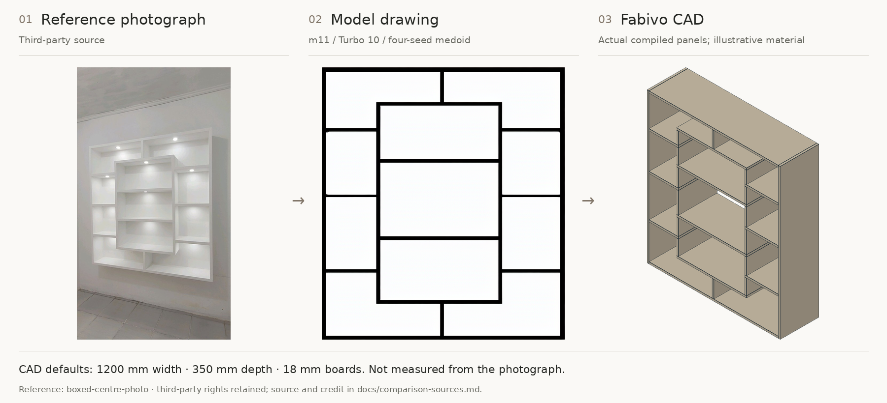
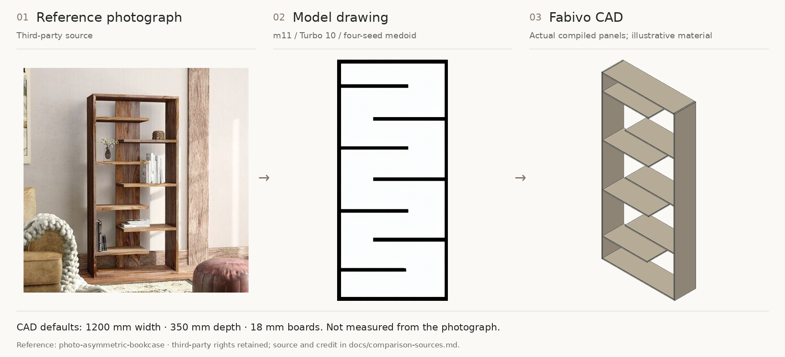
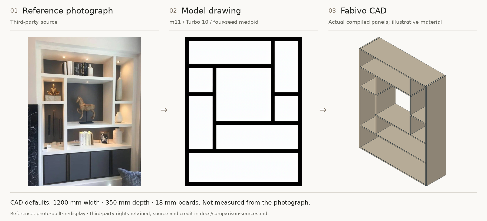
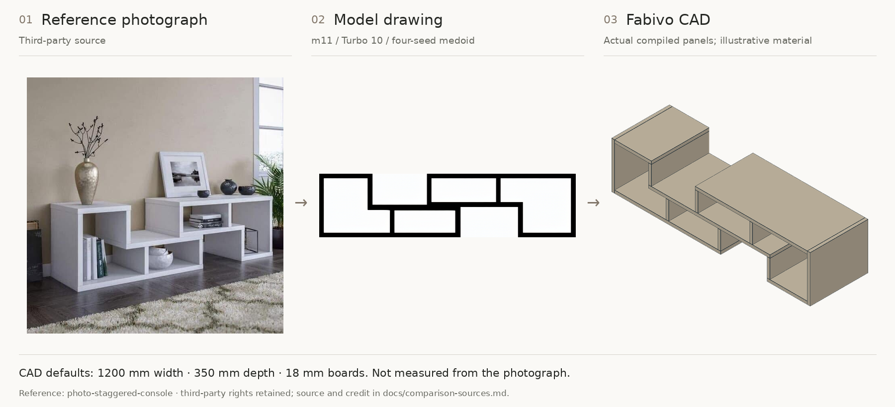

What the model kept. What it changed.
17 visual examples, in fixed alphabetical order. Two cases were removed from this gallery at the owner's request; the score table still includes all 19 cases. Each drawing is the actual m11 Turbo10 medoid selected by agreement between four seeds, without target labels. The CAD uses the archived reader output: no corrected boards, no hidden back added.
The photos are third-party references, not CC BY or Apache-licensed assets. Source provenance is incomplete. CAD size, depth, thickness and finish are illustrative defaults, not recovered measurements. This reused gold set is a diagnostic, not an unseen test.
01 / Boxed centre photo

Structural F1 1.000; board F1 0.043. 28 compiled panels. Selected seed 3. Reference source and rights.
02 / Asymmetric bookcase

Structural F1 1.000; board F1 0.364. 11 compiled panels. Selected seed 0. Reference source and rights.
04 / Built in display

Structural F1 1.000; board F1 0.077. 15 compiled panels. Selected seed 0. Reference source and rights.
05 / Staggered console

Structural F1 0.889; board F1 0.000. 13 compiled panels. Selected seed 0. Reference source and rights.